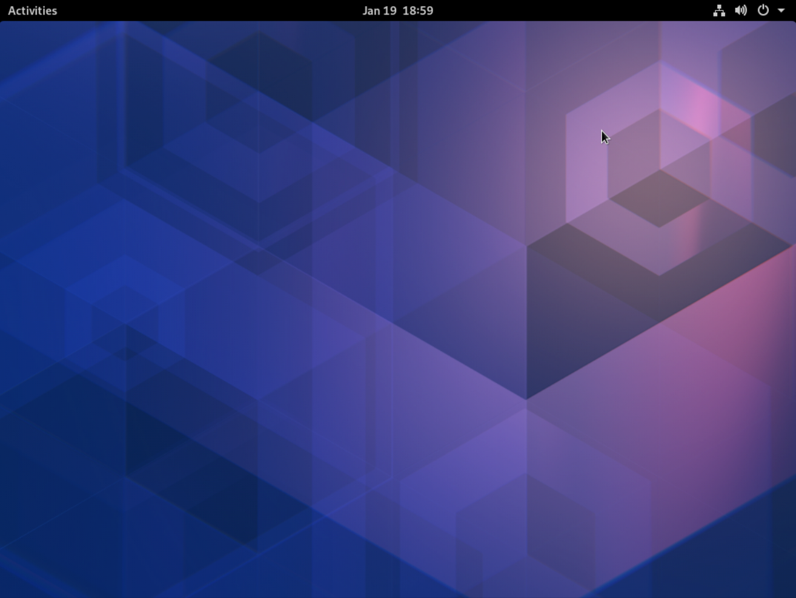

Ataraxia GNU/Linux is an independent Linux-based OS focusing on simplicity, security and privacy.
Ataraxia GNU/Linux is a Linux-based operating system, it was made from scratch and it follows three main principles: security, privacy and simplicity. Ataraxia GNU/Linux tries to be an innovative OS and therefore uses latest technologies from the GNU/Linux world. Ataraxia GNU/Linux is different from other distributions, for example it uses musl libc as the standard C library, LLVM/Clang toolchain as the default compiler, a significantly more secure SSL/TLS library called LibreSSL and simple userland tools such as Toybox and lobase (OpenBSD userland for Linux). Ataraxia GNU/Linux uses it's own package manager called tsukuri, which is compatible with CRUX Pkgfiles. Ataraxia GNU/Linux is oriented towards professional Linux users.
Despite using systemd, Ataraxia GNU/Linux is adhering a KISS (Keep It Simple Stupid) principle. It replaces mainstream components with simpler alternatives which do not sacrifice user experience. musl libc, toybox and lobase are just a few of them! Our code is simple and understandable that means it's easier to audit and/or fork.
Like other popular distributions, Ataraxia GNU/Linux was compiled with PIC, PIE, SSP. However, Ataraxia GNU/Linux configures software to be more secure and it tries to decrease attack surface. Kernel is configured for better security, without compromise. Ataraxia GNU/Linux will provide new mitigations and security features like Control Flow Integrity (CFI), fork of PaX patchset.
Ataraxia GNU/Linux does not collect any form of data and it does not allow proprietary software in its repositories. Proprietary software is known as a main tool to violate user's privacy. Furthermore, Ataraxia GNU/Linux developers are patching software to avoid any data collection.
If you want to get help or advice, please, check out our IRC, Telegram, Matrix, Reddit and Discord.
Also, you can help with our finances. Check out our Patreon page.
and Ethereum wallet:
0xE72931051e4aDB1c79bbAcad1E1427B2D4eD0D01
Today the owner and lead developer of Ataraxia GNU/Linux project Ishimoto Shinobu was banned from using GitHub for unknown reason. We have dissapointed in GitHub administration for doing such thing and we have moved our infrastructure on GitLab: https://gitlab.com/ataraxialinux Older releases available here: https://github.com/ataraxialinux/ataraxia/releases
We've released new snapshot for multiple platforms. This is interim release made to show latest fixes, improvements and features! Download and changelog
We've released a snapshot... It was fun... This is interim release made to show latest fixes, improvements and features! Download and changelog

We've released a snapshot for multiple architectures. This is interim release made to show latest fixes and improvements! Download and changelog
We've released a snapshot for x86_64 architecture for now. This is interim release made to show OpenBSD userland, fixed live installer, systemd init and other things! Download and changelog
We've released a snapshot for x86_64 architecture for now. This is interim release made to show new Suckless userland (sbase+ubase), live installer, new desktop environments and other things! Download and changelog
We've released a snapshot for x86_64 architecture for now. This is interim release made because of userland changes (Toybox + OpenBSD), SELinux policy and more! Download and changelog
We've released a snapshot for x86_64 architecture for now. This is interim release made because of MANY fixes in packages, better virtualization support and more! Download and changelog
We've released a snapshot for x86_64 architecture for now. This is interim release made because of new features like improved initramfs support, DNSSEC support and more! Download and changelog
We've released a snapshot for x86_64 architecture for now. This is interim release made because of firmware and Live CD fixes. Download and changelog
We've released a snapshot for x86_64 architecture for now. This is interim release made because of MANY changes! This release includes mixture of GNU, NetBSD, OpenBSD, Suckless and busybox userland, Wayland improvements, better Vulkan support and much more! Download and changelog
We've released a snapshot for x86_64 architecture for now. This is interim release made because of system changes. This release also includes bug fixes and GNOME 3.36. Download and changelog
We've released a snapshot for x86_64 architecture for now. This is interim release made because of system changes. This release also includes bug fixes. Download and changelog
We've released a snapshot for x86 architectures for now. This is interim release made because of system documentation changes. This release also introduces new security features. Download and changelog
We've released a snapshot for x86 architectures for now. This is interim release made because of documentation changes. Download and changelog
We've released a snapshot for x86_64 for now. This is interim release made to show what we've done in 2 months. Download and changelog
We're pleased to announce that Ataraxia Linux tech preview 2 is RELEASED! This is very huge release following tech preview 1. This release was under development for about 7 months! Since that time, our community has been growing and growing. Packages are getting updates very often! Download and changelog
We've released a snapshot for x86_64 for now. This is interim release was made to show the GNOME Desktop Environment working without systemd, elogind, pulseaudio, avahi and Linux-PAM. Download and changelog

We're glad to announce that GNOME and Xfce are officialy supported by the Ataraxia Linux Team! GNOME can run without systemd, pulseaudio (we're using apulse), avahi and PAM (but we're using PAM to trick gdm's configuration without installing it in the system as well).
We've released a snapshot for x86_64 for now. This is interim release made to show what we've done in 3 months. Download and changelog
We've released snapshot for PowerPC64 (Big-Endian and Little-Endian). This is interim release made to show what we've done in 2 months. Download and changelog
We're glad to announce that we moved to OpenRC! We had issues with runit and initscripts. Also we added netifrc from Gentoo Linux.
We have changed our name to Ataraxia Linux.
We're pleased to announce that a new release has arrived! Changelog and downloads: https://github.com/ataraxialinux/ataraxia/releases/tag/tp1
We're pleased to announce that we opened a Discord Server!
We're pleased to announce that we have a brand new package manager called "ne"! Click here for more information.